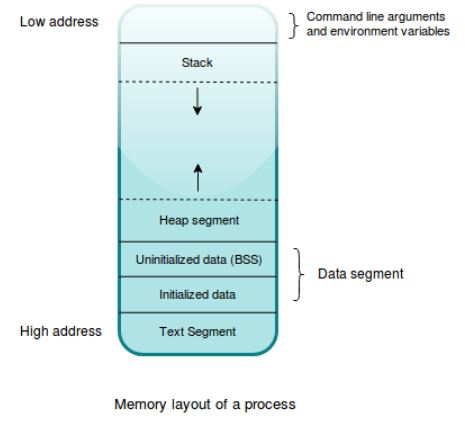

[[PISTON]]
[[types-int]]
[[mr-size]]
[[POINTERS]]
Memory

- Text segment: This section contains the actual code to be executed in the compiled binary. The text segment is a read-only segment and any user code is forbidden to modify it. Doing so can result in a crash of the program.
- Data segment: This is further divided into subsections, that is, the initialized data segment and uninitialized data segment, which is historically known as Block Started by Symbol (BSS), and holds all global and static valuesdeclared in the program. Uninitialized values are initialized to zero when they are loaded into memory.
- Stack segment: This segment is used to hold any local variables and the return addresses of functions. All resources whose sizes are known in advance and any temporary/intermediary variables that a program creates are implicitly stored on the stack.
- Heap segment: This segment is used to store any dynamically allocated data whose size is not known up front and can change at runtime depending on the needs of the program. This is the ideal allocation place when we want values to outlive their declaration within a function.
a process is not allowed to access the physical memory directly. Instead, it uses a virtual memory, which is mapped to the actual physical memory by the OS using an in-memory data structure called pages, which are maintained in page tables. The process has to request memory from the OS for its use, and what it gets is a virtual address that is internally mapped to a physical address in the RAM. For performance reasons, this memory is requested and processed in chunks. When virtual memory is accessed by the process,the memory management unit does the actual conversion from virtual to physical memory.
a process from the OS is known as memory allocation. A process requests a chunk of memory from the OS by using system calls, and the OS marks that chunk of memory in use by that process.
POSIX
POSIX is an acronym for Portable Operating System Interface.
A GC runs as a daemon thread as part of the running program and analyzes the memory that is no longer being referenced by any variable in the program and frees it automatically at certain points in time along with program execution.
Memory Management Strategies
-
Manual: C has his form of memory management, where it’s completely the programmers responsibility to put free calls after the code is done using memory. C++ automates this to some extent using smart pointers where the free call is put in a class’s deconstructor method definition.
-
Automatic: Languages with this form of memory management include an additional runtime thread,that is the Garbage Collector, that runs alongside the program as a daemon thread. Most dynamic languages based on a virtual machine such Python, Java, C# and Ruby rely on automatic memory management. Automatic memory management is one of the reasons that writing code in these languages is easy.
-
[[SemiAutomatic]]: Languages such as Swift fall into this category. They don’t have a dedicated GC built in as part of the runtime, but offer a reference counting type, which does automatic management of memory at a granular level Rust also provides the reference counting types Rc
and Arc .
the majority of Common Vulnerabilities & Exposure (CVEs) in software related to memory management, it shows that we humans are not very good at this!
Memory Allocator
the compiler rustc itself uses the jemalloc allocator, whereas the libraries and binaries that are built from Rust use the system allocator. On Linux, it would be the glibc memory allocator APIs. Jemalloc is an efficient allocator library for use in multithreaded environments and it greatly reduces the build time of Rust programs. While jemalloc is used by the compiler, it’s not used by any applications that are built with Rust because it increases the size of the binary. So, compiled binaries and libraries always use the system allocators by default.
Rust also has a pluggable allocator design, and can use the system allocator or any user implemented allocator that implements the GlobalAlloc trait from the std::alloc module. This is often implemented by the #[[global_allocator]] attribute, which can be put on any type to declare it as an allocator. For rare cases where you need to allocate a primitive type on the heap, you can use the Box
type, which is a generic smart pointer type.
tags[[segmentation_fault_error]] [[GlobalAlloc]]
Stack
- The stack actually contains two levels of objects: #stack_frame s and data.
- The stack grants programmers access to multiple elements stored within it, rather than the top item only.
- The stack can include elements of arbitrary size, where the implication of the dinner plate(exmple theory in book) analogy is that all elements must be of the same size.
So why is the stack called the stack? Because of the usage pattern. Entries on the stack are made in a Last In, First Out (#LIFO) manner. The entries in the stack are called stack frames. Stack frames are created as function calls are made. As a program progresses, a cursor within the CPU updates to reflect the current address of the current stack frame.
one CPU instruction: incrementing/decrementing the stack frame pointer
The #cursor is known as the [[stack_pointer]]. As functions are called within functions, the stack pointer decreases in value as the stack grows. When a function returns, the stack pointer increases.Stack frames contain a function’s state during the call. When a function is called within a function, the older function’s values are effectively frozen in time. Stack frames are also known as activation frames, and less commonly allocation records.
Unlike dinner plates, every stack frame is a different size.
The stack frame contains space for its function’s arguments, a pointer to the original call site, and local variables (except the data which is allocated on the heap).
The stack’s primary role is to make space for local variables. Why is the stack fast?
All of a function’s variables are side by side in memory. That speeds up access.
The stack frame pointer (esp) is a CPU register that always points to the top of the stack. The stack frame pointer keeps on updating as functions get called, or when they return. When a function returns, its stack frame is discarded by restoring the stack frame pointer to where it was before entering the function.
Heap
The heap is an area of program memory for types that do not have known sizes at compile time. What does it mean to have no known size at compile time? In Rust, there are two meanings. Some types grow and shrink over time as required.
Obvious cases are String and Vec
. Other types are unable to tell the Rust compiler how much memory to allocate even though these don’t change size at runtime. These are known as dynamically sized types. Slices ([T]) are the commonly cited example. Slices have no compile-time length. Internally, these are a pointer to some part of an array. But slices actually represent some number of elements within that array. Another example is a trait objects.
[[RAII]] stands for Resource Acquisition Is Initialization; a paradigm suggesting that resources must be acquired during initialization of objects and must be released when they are deallocated or their destructors are called.
The only way to allocate memory on the heap is through smart pointer types.
The heap memory is to be used with care. Values in the heap can possibly live forever during the lifetime of the program if not freed, and may eventually lead to the program being killed by the Out Of Memory (OOM) killer in the kernel. At runtime, a bug in the code or mistake from the developer can also cause the program to either forget to free the memory, or access a portion of memory that is outside the bounds of its memory layout, or dereference a memory address in the protected code segment. When this happens, the process receives a trap instruction from the kernel, which is what you see as a segmentation fault #error message, followed by the process getting aborted. As such, we must ensure that processes and their interactions with memory need to be safe! Either we as programmers need to be critically aware of our malloc and free calls or used memory safe language to handle these details for us.
Stack Vs Heap
- The stack is fast, but the heap is slow.
- That difference leads to the following axiom: “When in doubt, prefer the stack.” To place data onto the stack, the compiler must know the type’s size at compile time- Translated to Rust, that means, “When in doubt, use types that implement Sized.”
- based on Memory layout image we can say Heap in-replacable space in comprasion of stack that is LIFO
| Stack | Heap |
|---|---|
| Simple | Complex |
| Safe | Dangerous* |
| Fast | Slow |
| Rigid | Flexible |
| no cost | cost of involves dereferencing the pointer |
“* Not in safe Rust!”
“ because a function’s local variables“
The heap is less organized: when you put data on the heap, you request a certain amount of space. The memory allocator finds an empty spot in the heap that is big enough, marks it as being in use, and returns a pointer, which is the address of that location. This process is called allocating on the heap and is sometimes abbreviated as just allocating. Pushing values onto the stack is not considered allocating. Because the pointer to the heap is a known, fixed size, you can store the pointer on the stack, but when you want the actual data, you must follow the pointer. Think of being seated at a restaurant. When you enter, you state the number of people in your group, and the staff finds an empty table that fits everyone and leads you there. If someone in your group comes late, they can ask where you’ve been seated to find you.
Pushing to the stack is faster than allocating on the heap because the allocator never has to search for a place to store new data; that location is always at the top of the stack. Comparatively, allocating space on the heap requires more work, because the allocator must first find a big enough space to hold the data and then perform bookkeeping to prepare for the next allocation.
What is dynamic memory allocation?
At any given time, a running program has a fixed number of bytes with which to get its work done.
When the program would like more memory, it needs to ask for more from the OS.
Dynamic memory allocation is a three-step process:
- Request memory from the OS via a system call. In the UNIX family of operating systems, this system call is alloc(). In MS Windows, the call is HeapAlloc().
- Make use of the allocated memory in the program.
- Release memory that isn’t needed back to the OS via free() for UNIX systems and HeapFree() for Windows.
Memory Data Leak
Rust’s memory safety guarantees make it difficult, but not impossible, to accidentally create memory that is never cleaned up (known as a memory leak). Preventing memory leaks entirely is not one of Rust’s guarantees in the same way that disallowing data races at compile time is, meaning memory leaks are memory safe in Rust.
We can see that Rust allows memory leaks by using Rc
and RefCell : it’s possible to create references where items refer to each other in a cycle. This creates memory leaks because the reference count of each item in the cycle will never reach 0, and the values will never be dropped.
Memory Safety
Safety: cannot point to invalid memory and remain valid in all code paths. In other words, safety basically boils down to pointers having valid references all of the time in your program, and that the operations with pointers do not lead to undefined behavior (#error).
Undefined behavior is the state of a program where it has entered a situation that has not been accounted for in the compiler’s because the compiler specification does not clarify what happens in that situation.
Languages based on virtual machines use garbage collection to eliminate whole classes of memory safety issues.
While Rust doesn’t have a built-in GC, it relies on the same RAII built into the language and makes freeing used memory automatic for us based on the scope of variables and is much more safer than C or C++.
Memory safety bugs lead to memory leaks.
Deallocating
Note: In C++, this pattern of deallocating resources at the end of an item’s lifetime is sometimes called Resource Acquisition Is Initialization (RAII). The drop function in Rust will be familiar to you if you’ve used RAII patterns.
Double Free
This is a problem: when s2 and s1 (s2 is copied s1 means 2different pointer and the same data) go out of scope, they will both try to free the same memory. This is known as a #error_double_free and is one of the memory safety bugs we mentioned previously. Freeing memory twice can lead to memory corruption, which can potentially lead to security vulnerabilities.
Memory Alignment
Word size: Word size means the number of bits of data processed by the microprocessor as a unit.
Memory access granularity: The minimum chunk of data accessed by the CPU from the memory bus is called the memory access granularity.
Data types in all programming languages have both a size and an alignment. The alignment of primitive types is equal to their size. So, usually, all primitive types are aligned and the CPU has no problem doing an aligned read for these. But when we create custom data types, compilers usually insert padding between our struct fields if they are not aligned to allow the CPU to access memory in an aligned manner.
UnRolling
// is an optimization that removes the overhead of the loop controlling code and instead generates repetitive code for each iteration of the loop.
fn main() { // Sample data initialization let mut buffer = vec![10, 20, 30, 40, 50, 60, 70, 80, 90, 100, 110, 120, 130]; // Example buffer values let coefficients: [i64; 12] = [ 1, 2, 3, 4, 5, 6, 7, 8, 9, 10, 11, 12 // Example coefficients ]; let qlp_shift: i16 = 2; // Example shift value // Reference to buffer slice for modification let buffer_slice: &mut [i32] = &mut buffer; // Implementing the given code snippet for i in 12..buffer.len() { let prediction = coefficients.iter() .zip(&buffer_slice[i - 12..i]) .map(|(&c, &s)| c * s as i64) .sum::<i64>() >> qlp_shift; let delta = buffer_slice[i]; buffer_slice[i] = prediction as i32 + delta; } // Printing the modified buffer println!("Modified Buffer: {:?}", buffer_slice); } //Output: Modified Buffer: [10, 20, 30, 40, 50, 60, 70, 80, 90, 100, 110, 120, 1755]
Glossery
stack: contiguous layout memory = LIFO
tags[[memory_leak]] [[safety]] [[LIFO]]